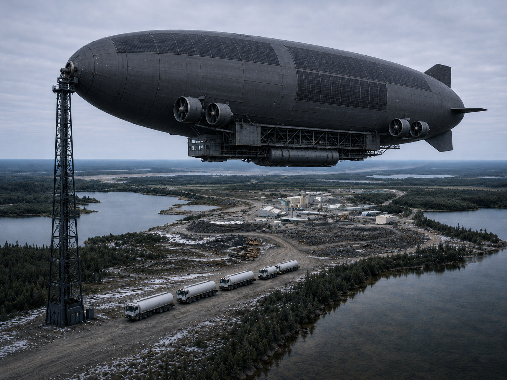

Lighter-than-air systems · Crawl · Walk · Run
Flyweight Aerospace builds purpose-built lighter-than-air aircraft. We follow a deliberate crawl-walk-run path: compliant test platforms first, an autonomous survey and remote-sensing aircraft as our first commercial platform, and 50-tonne heavy-lift cargo as the destination, delivering to remote sites with no runway and no road.
Get in touchWinter ice roads across northern Canada now operate roughly ten fewer days per decade due to warming temperatures. Mines that depend on them carry months of consumables on-site to hedge against late openings and early closures, at enormous inventory cost. When roads close unexpectedly, the only alternative is emergency air freight at rates that bear no relationship to actual transport economics.
A 50-tonne aircraft is a destination, not a first project. Most airship ventures bet everything on one giant vehicle and years of development before a dollar of revenue. Flyweight does the opposite: we are a lighter-than-air systems company, building a sequence of purpose-built airships that each fly real hardware, earn their place, and compound the engineering, certification, and operating know-how the next one depends on. Three stages: crawl, walk, then run. We are at the crawl stage today.
Small, regulation-compliant airborne platforms that prove the fundamentals: envelope handling, propulsion and control, autonomy, payload integration, launch and recovery, and the field procedures and regulator-facing evidence that everything later depends on.
A 300 kg-class autonomous aircraft carrying survey payloads (LiDAR, magnetometry, hyperspectral and thermal imaging) for mineral exploration, forestry and wildfire monitoring, and infrastructure inspection. This is our first revenue platform, and the stage closest to flight.
The no-runway heavy-lift cargo aircraft: the scaled application of a proven LTA-systems capability to year-round resupply of remote mines and other austere, roadless sites.
Our first commercial platform is a purpose-built autonomous airship for airborne survey and inspection. Lighter-than-air carriage gives sensors something fixed-wing aircraft, helicopters, and quadcopters can't offer all at once: long endurance, a low-vibration ride, low-and-slow persistence for high resolution, and the payload volume to run a full multi-sensor stack in a single sortie, over terrain where a ground chase team can't follow. It is also where the team's remote-sensing background is most directly load-bearing, and where we expect to earn first. The autonomy and sensor hardware it relies on are now mature and affordable, and beyond-visual-line-of-sight rules are beginning to open the airspace to fly it, which is what makes this platform fieldable now rather than someday.
The destination platform is designed from first principles for Canadian Shield mine logistics, not adapted from a military program or a passenger concept. Lighter-than-air buoyancy provides lift. Distributed diesel propulsion provides Arctic reliability. An active buoyancy management system is designed to enable full-payload delivery with no prepared surface and no ballast exchange at the destination site. Figures below reflect current concept targets.

The founding team has direct experience in lighter-than-air platform development, aerospace systems engineering from concept through flight hardware, and commercial development in industrial aerospace markets. We have built and flown things. We know what the hard problems are.
Technical overview available on request. Detailed materials shared under NDA.
Flyweight Aerospace is at the pre-commercial development stage. We want to speak with two groups. First, organizations with airborne survey or inspection needs (mineral explorers, forestry and wildfire agencies, infrastructure operators) who can tell us what today's platforms get wrong. Second, mine operators and logistics managers willing to share their constraints: ice road dependence, emergency freight spend, inventory buffer cost. The ask is a discovery call, not a commitment. Those who engage early and sign a non-binding letter of intent get direct input on the concept of operations.
james@flyweightaero.comInitial conversations are non-binding and confidential. We are happy to share our technical overview on request.
Investors: Flyweight is early and raising to fund the crawl stage. If a no-road logistics layer for remote industry is a thesis you share, we would welcome an early conversation at the same address.